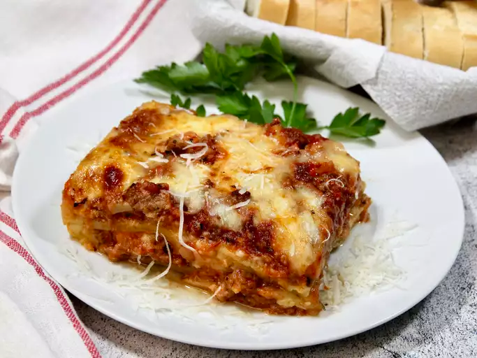

Lasagna

Special homemade lasagna recipe with a meaty, made-from-scratch tomato sauce and a deliciously cheesy filling.
Ingredients
- Meat: pound of ground meat (½ pound ground pork, ½ pound lean ground beef)
- Onion: diced onion is cooked until translucent with the ground meat
- Canned Tomatoes: can of tomato sauce and a can of crushed tomatoes.
- Fresh Herbs: chop two tablespoons of parsley and crush one clove of garlic.
- Sugar: dash of sugar balances out all of the acidity from the tomatoes.
- Spices and seasoning: dried basil, dried oregano, salt, and black pepper.
- Noodles: Uncooked lasagna noodles
- Cheese: cottage cheese, parmesan and shredded mozzarella
- Eggs
Steps to make the lasagna
- Cook the meat: Cook the ground meat in a skillet until browned and crumbly. Add the onion and continue cooking until it's translucent. Stir in the canned tomato products, half of the parsley, garlic, basil, 1.5 teaspoons of salt, oregano, and sugar.
- Cook the noodles: Boil the lasagna noodles in lightly salted water until they're al dente.
- Make the cheese layer: Mix cottage cheese, Parmesan cheese, eggs, the remaining parsley, the remaining salt, and pepper in a bowl.
- Assemble the lasagna: Layer the ingredients according to the recipe (starting with sauce and ending with mozzarella) until the lasagna is assembled.
- Prepare the lasagna: Cover with foil and bake in the preheated oven at 375F for about 30-40 minutes. Remove the foil and continue baking until the top is golden brown (approx 5-10 minutes).